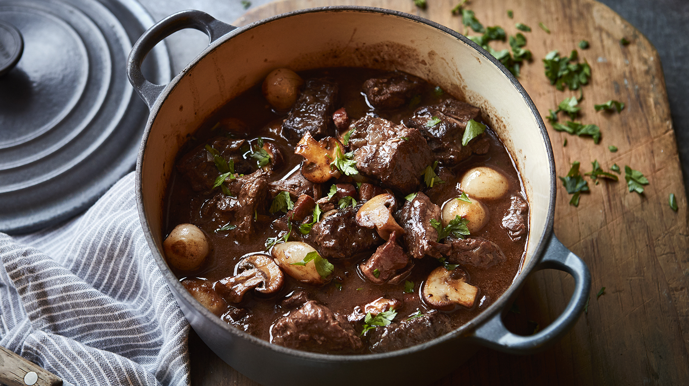

Julia Child's Beef Bourguinon

Description
A rich and hearty beef stew, perfect for cold winter days. This stew is delicious as-written, but if made in advance and allowed to simmer all day, the flavors become more complex and delicious. I like to serve this bourguinon over a pile of mashed potatoes.
Ingredients (stew):
- 1/4 lb bacon or lardon
- 3 T olive oil
- 3 lb stewing beef
- 1 carrot, diced
- 1 onion, diced
- 2 cloves garlic, mashed
- 1/2 t fresh thyme
- 1 bay leaf
- salt, to taste
- black pepper, to taste
- black pepper, to taste
- 2 T flour
- 1 T tomato paste
- 3 c red wine
- 2-3 c beef stock
Ingredients (garnish):
- 1 lb pearl onions, peeled
- 1 lb mushrooms, halved
- 3 1/2 T butter
Recipe:
- Cut bacon into lardons. Cook in dutch oven for ~10 minutes until cooked, but not very crispy. While bacon is cooking, cut beef chuck into 1 1/2 inch cubes, trimmed of most fat.
- Add oil to rendered bacon fat and heat dutch oven just until oil starts to smoke. Add beef chunks, leaving room between them, and brown thoroughly on all sides. May need multiple batches. Set browned beef aside with bacon.
- In the same pot, add diced vegetables and cook until translucent, stirring frequently.
- Return bacon and beef to pot, mix well, and season with a pinch of salt and pepper. Sprinkly with flour and mix everything to coat. Add tomato paste and cook for 1 minute.
- Add in red wine and beef stock, adding enough stock to fully cover meat and vegetables.
- Transfer dutch oven to oven at 350 degrees or leave on stovetop at low heat. Cook for 3 1/2 to 4 hours at a gentle simmer